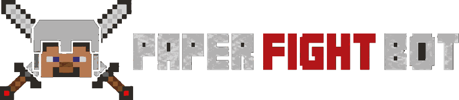

Paper Fight Bot

Version 4.9.0-beta · free on Modrinth
PvP bots that actually fight. They path across your world to find you, crit and sprint‑attack, dodge, pop totems, throw pearls, clutch with a water bucket and bridge over the gap you just jumped. Spawn one, or fifty.
- 1.2K
- downloads
- 0
- plugins needed on 4.1.0+
- 50
- bots from one command
- 1.16+
- Paper · Bukkit · Purpur · Spigot
What the bots do
They aren't target dummies. Give one a totem, an axe, some pearls and a water bucket and it will use all of it against you.
Combat
Critical hits, sprint attacks and dodging. Bring an axe and it breaks your shield — bring more than one bot and they surround you rather than queuing up in a line.
Staying alive
Pops a totem when it dies, eats to regen, and backs off to heal when it's losing instead of trading to the death.
Getting to you
Pathfinds across terrain, bridges over gaps, throws ender pearls to close distance and clutches with a water bucket. Reads lava and void and won't walk into either.
Cobwebs
Places webs on you to lock you down, and knows how to get out of yours.
Groups
Build named groups, then send a group at a player or set two groups on each other. Hit one bot roaming in a group and the whole group turns on you.
Roam and patrol
Let bots wander your map, or lay down waypoints and have them walk a loop. Roaming bots stay peaceful until something hits them.
Equipment screen
Right‑click a bot in creative and gear it like a player — armour, weapon, offhand, axe, food, webs, pearls, water bucket. Empty slots refill from its storage mid‑fight.
Looks like a player
Player‑style names shown in the tab list, and death messages that read like a real kill.
Runs anywhere
Paper, Bukkit, Purpur or Spigot on 1.16 and up, tested on 1.21.11. From 4.1.0 the plugin stands alone.
Being worked on
Discord hears about these first.
Mace and crystal
Equipment slots held back for mace and crystal gear, so bots can fight the way the meta actually does.
Auto potting
Bots throwing and drinking potions on themselves mid‑fight instead of only eating.
A proper GUI
Menus for the commands, so you don't have to remember every flag to run a group fight.
Found a bug, or want a feature? Bug reports in Discord are what drive most updates.
Join the Discord